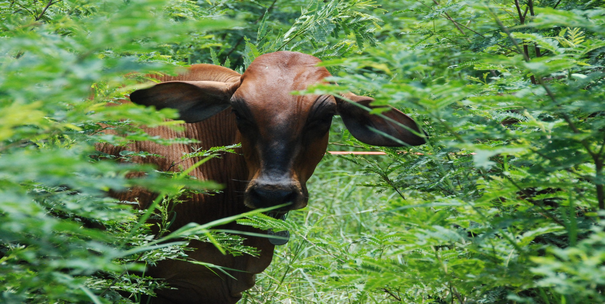

La Bioeconomía: Una Oportunidad para Territorios Rurales
Los sistemas productivos bovinos en Colombia representan:
- 1.5% del PIB nacional y 20% del PIB agropecuario
- Más de 500,000 familias rurales dependen directamente de la ganadería
- Antioquia: 1.2 millones de cabezas de ganado en 35,000 predios
- El 68% de los productores son pequeños y medianos (< 50 animales)
Sin embargo... La productividad y sostenibilidad de estos sistemas enfrenta desafíos críticos que limitan su potencial bioeconómico.
Brechas Tecnológicas que Limitan la Competitividad
🔴 Acceso Limitado a Tecnología
- Equipos de monitoreo: $5,000-$50,000 USD
- Sistemas de gestión: >$2,000 USD/año
- Inaccesibles para el 85% de productores
🔴 Información Fragmentada
- Datos productivos sin integrar
- Decisiones basadas en intuición
- Imposibilidad de cuantificar impactos

La Urgencia de Democratizar la Bioeconomía
¿Qué necesitan los productores rurales?
- ✓ Herramientas tecnológicas accesibles (< $200 USD)
- ✓ Modelos bioeconómicos que integren biología + economía + ambiente
- ✓ Sistemas de apoyo a decisiones basados en datos objetivos
- ✓ Capacitación técnica contextualizada a sus realidades
Pregunta central: ¿Cómo desarrollar soluciones bioeconómicas que sean técnicamente robustas y económicamente viables para pequeños y medianos productores?
Nuestra Respuesta: Bioeconomía Aplicada desde GAMMA
Grupo GAMMA - Universidad de Antioquia
Desarrollamos modelos bioeconómicos y soluciones tecnológicas de bajo costo que integran:
📚 Fundamentación Teórica
- Modelos de evaluación de bovinos
- Pseudosimulación bioeconómica
- Análisis de rentabilidad (RDDbio)
🔧 Desarrollo Tecnológico
- Sensores IoT de bajo costo
- Inteligencia artificial aplicada
- Plataformas de código abierto
Enfoque: Co-creación con productores rurales para asegurar adopción y sostenibilidad.
Fundamento: Libro "Modelos Bioeconómicos para Evaluación de Bovinos"
Autores: Mario F. Cerón-Muñoz & José F. Guarín-Montoya
Editorial: Generis Publishing (2024)
Enfoque: Transdisciplinar (economía + biología + producción animal + ambiente)
Contenido:
- Cap. 1: Costos parciales y Retorno Diferencial de Desempeño (RDDbio)
- Cap. 2: Evaluación bioeconómica mediante pseudosimulación
- Cap. 3: Dinámica de sistemas de producción
- Cap. 4: Herramientas analíticas para valoración de fincas
Innovación Metodológica
- ✓ Integra parámetros biológicos, económicos y ambientales
- ✓ Algoritmos en R-project (código abierto)
- ✓ Aplicable a diferentes sistemas productivos
- ✓ Permite comparar individuos y sistemas
Impacto: Financiado por CODI-UdeA (Proyecto 2022-52272). Base conceptual para desarrollos tecnológicos posteriores.
Caso 1: Modelo Bioeconómico para Mastitis Bovina
Proyecto de Maestría: Manuela Alejandra Cuartas Herrera
Directores: José F. Guarín & Mario F. Cerón
Título: "Modelo bioeconómico para evaluación del impacto del Recuento de Células Somáticas (RCS) sobre la rentabilidad en sistemas lecheros de trópico alto colombiano"
🎯 Objetivos
- Analizar relación RCS vs. variables productivas
- Evaluar impacto del RCS en costos de producción
- Desarrollar aplicativo bioeconómico
📊 Metodología
- Análisis de registros de pago por calidad
- Encuestas a productores
- Simulación de escenarios
💡 Innovación
Primera herramienta en Colombia que integra:
- ✓ Datos de calidad industrial (RCS)
- ✓ Variables productivas y composicionales
- ✓ Costos de tratamiento y descarte
- ✓ Análisis de rentabilidad por escenario
Impacto esperado: Reducción de 20-30% en pérdidas por mastitis mediante decisiones informadas.
Caso 2: Cooperación Internacional - Estaciones Inteligentes de Ganadería
Proyecto: "Mejoramiento de la Productividad del Ganado de Carne en Colombia a través de Tecnologías Inteligentes de Bajo Costo"
Duración: 60 meses | Financiamiento: USDA Food for Progress (US$35 millones)
🤝 Alianza Estratégica
- Líder: Texas A&M University-Kingsville
- Socios: Texas A&M AgriLife, Universidad de Antioquia (FCA-GAMMA), FEDEGAN, AGROSAVIA
- Región: Norte de Antioquia y otras zonas ganaderas
🔧 Componente Tecnológico
Estaciones Inteligentes de Ganadería
- Autónomas (energía solar)
- Sistema de pesaje integrado
- Cámaras multi-ángulo
- Sensores de gases (CH₄)
- Conectividad IoT
📚 Componente Formativo
- Talleres con >1,000 productores
- Contenidos de extensión digital
- Fincas demostrativas
- Experiencias de investigación estudiantil
Meta: Incrementar productividad ganadera y expandir comercio regional mediante ganadería de precisión.
Caso 3: Monitoreo de Emisiones de Metano Entérico
Publicación: "Electronic device for automatic individualized monitoring of enteric methane emissions in dairy cows"
Autores: John F. Ramírez-Agudelo, Sebastián Bedoya-Mazo, Luisa F. Moreno-Pulgarín, José F. Guarín
Revista: Rev. Colomb. Cienc. Pecu. 38(4):e358533 (2025)
🚀 Innovación Tecnológica
Sistema de bajo costo:
- Sensor MQ-4 (< $20 USD)
- ESP8266 Wi-Fi (< $5 USD)
- Sistema de flujo de aire (2 L/min)
- Registro 3x/segundo
Módulo de IA:
- YOLOv8n para identificación
- Latencia: 24 ms
- Precisión: 100% (dataset de 26 vacas)
📊 Resultados
- ✓ Medición individualizada exitosa
- ✓ Identificación de vacas alto-emisoras
- ✓ Series temporales detalladas
- ✓ Transmisión inalámbrica de datos
🌍 Impacto
Aplicación: Programas de mejoramiento genético y estrategias de mitigación de gases de efecto invernadero (GEI) en ganadería.
Ventaja: Costo 100x menor que sistemas comerciales tradicionales.
Caso 4: SmartAgro IA - Monitoreo de Actividad en Pastoreo
Proyecto: "Diseño e Implementación de un Sistema de IA para Monitorear la Actividad de Vacas Lecheras en Pastoreo"
Investigadores: José F. Guarín, John F. Ramírez-Agudelo, Sebastián Bedoya-Mazo (GRICA)
Duración: 24 meses | Presupuesto: $230 millones COP
🎯 Objetivos
- Desarrollo de estaciones IoT de bajo costo (< $200 USD)
- Módulos de IA para detección de enfermedades
- Dashboard para >500 productores
- Código abierto (GPL v3)
🔧 Componentes
- Arduino + sensores ambientales
- Cámaras para visión computacional
- Conectividad LoRaWAN
- Almacenamiento local + nube
🌱 Enfoque Participativo
Co-creación con productores:
- 10-15 fincas piloto
- Facilitadores locales capacitados
- Escuelas de campo (40 horas)
- "Extensionistas Digitales" certificados
Impacto esperado:
- ✓ Reducción 25% en fertilizantes
- ✓ Detección temprana de enfermedades
- ✓ Arraigo territorial juvenil
Modelo Integrado GAMMA: De la Teoría a la Práctica
📚 Fundamento Científico
- Libro: marcos conceptuales y ecuaciones bioeconómicas
- Tesis: aplicación a problemas específicos (mastitis, RCS)
- Papers: validación científica internacional
🔧 Desarrollo Tecnológico
- Hardware abierto de bajo costo
- IA aplicada (YOLO, visión computacional)
- Plataformas de datos escalables
Filosofía GAMMA: Bioeconomía aplicada = Ciencia rigurosa + Tecnología accesible + Participación comunitaria
Impacto Consolidado: Transformando Territorios
📊 Resultados Cuantitativos
- 1 libro publicado (Generis, 2024)
- 2 artículos Q (Rev. Colomb. Cienc. Pecu.)
- 3 proyectos con financiamiento competitivo
- 2 tesis de maestría en desarrollo
- US$35 millones en cooperación internacional (Texas A&M)
- >1,000 productores impactados (proyectado)
🌟 Resultados Cualitativos
- Democratización tecnológica: Dispositivos 100x más económicos que comerciales
- Código abierto: Replicabilidad en otros territorios
- Enfoque territorial: Co-diseño con comunidades
- Formación de talento: Estudiantes y jóvenes rurales
- Diálogo de saberes: Ciencia + conocimiento campesino
"Un agro productivo que construye tejido social, en armonía con la naturaleza"
Retos y Oportunidades para Antioquia
🚀 Oportunidades
- Escalamiento regional: Replicar modelo en subregiones de Antioquia
- Articulación institucional: UdeA + Gobernación + IICA + productores
- Capacitación masiva: Extensionistas digitales en cada municipio
- Innovación abierta: Código y hardware libre para adaptación local
⚠️ Retos Críticos
- Conectividad rural: LoRaWAN como alternativa viable
- Sostenibilidad financiera: Modelos de negocio comunitarios
- Adopción tecnológica: Alfabetización digital contextualizada
- Políticas públicas: Incentivos para bioeconomía territorial
Pregunta para la audiencia:
¿Cómo podemos articular esfuerzos institucionales, académicos y comunitarios para hacer de Antioquia un referente de bioeconomía territorial con base tecnológica?